Vallecrosia al MareNovember 2026
Festa della Zucca
When: 1 November
Where: Vallecrosia al Mare
Il Comune di Vallecrosia e l’associazione Visit Vallecrosia vi invitano a festeggiare insieme la 25ª edizione della tradizionale Festa della Zucca! 🎉 Una giornata dedicata ai colori e ai sapori dell’autunno tra musica, allegria e gustose specialità a base di zucca! 🎃🍂 🚍 Servizio navetta gratuito attivo per tutta la durata della manifestazione. Con il patrocinio della Regione Liguria e la collaborazione di Vallecrosia al Centro e VAMA Service.
Official event information ↗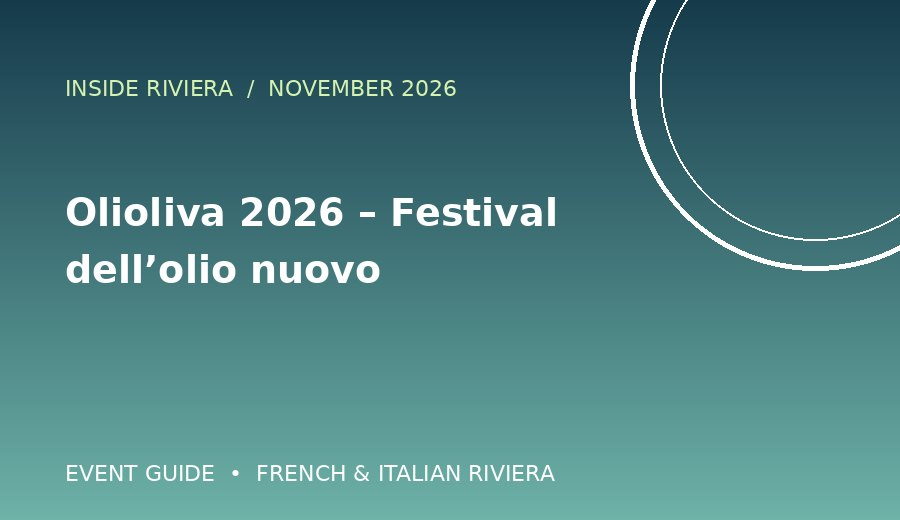
ImperiaNovember 2026
Olioliva 2026 – Festival dell’olio nuovo
When: 6–8 November
Where: Imperia
Evento dedicato all’olio nuovo e ai prodotti tipici del territorio, in programma a Imperia dal 6 all’8 novembre 2026 secondo il calendario turistico regionale.
Official event information ↗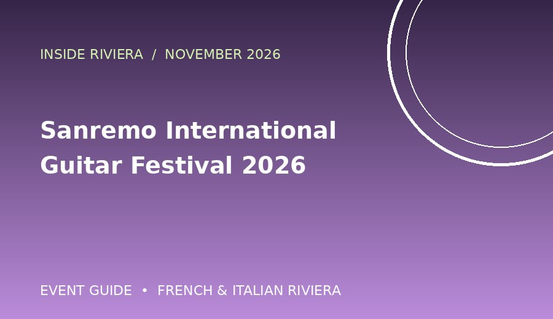
SanremoNovember 2026
Sanremo International Guitar Festival 2026
When: 10–14 November
Where: Sanremo
XII Sanremo International Guitar Festival & Competition, 10–14 November 2026. Five days of classical-guitar concerts, an international competition and masterclasses, artistic direction by Diego Campagna.
Official event information ↗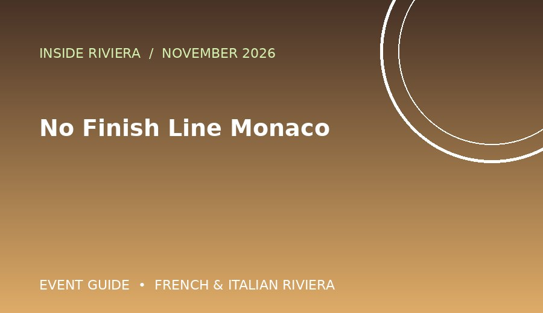
MonacoNovember 2026
No Finish Line Monaco
When: 14–22 November
Where: Monaco
Charity running event open to participants of different ages and abilities.
Official event information ↗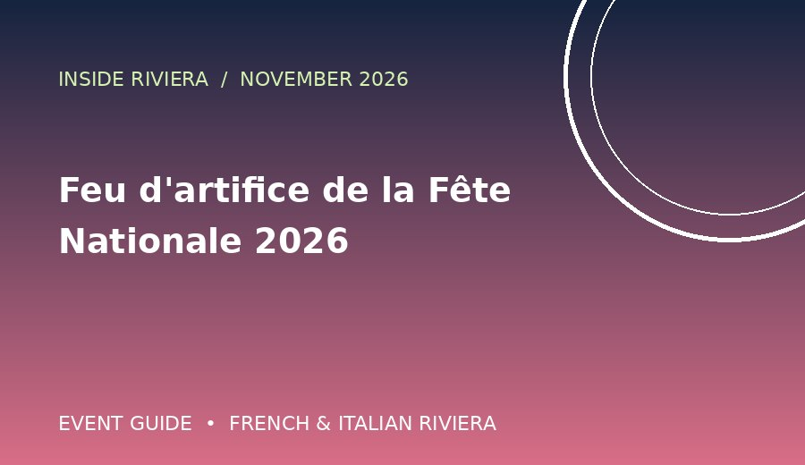
MonacoNovember 2026
Feu d'artifice de la Fête Nationale 2026
When: 18 November
Where: Monaco
Official Monaco National Day fireworks display, Wednesday 18 November 2026, launched from Port Hercule.
Official event information ↗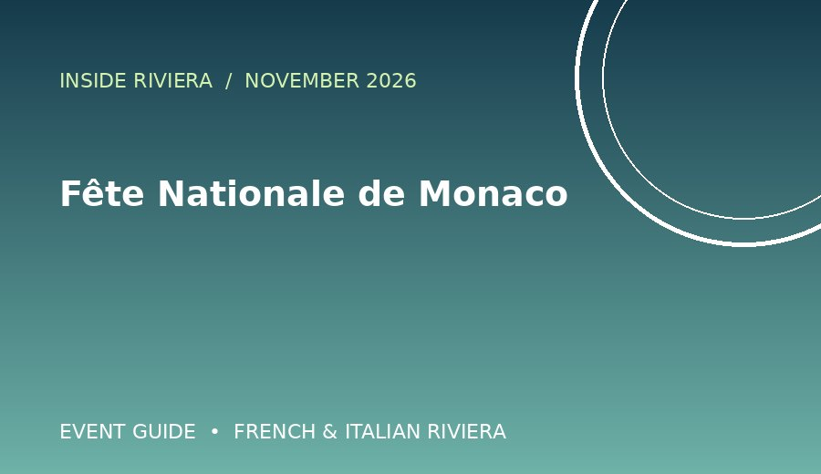
MonacoNovember 2026
Fête Nationale de Monaco
When: 19 November
Where: Monaco
Official National Day celebrations of the Principality of Monaco featuring ceremonies and evening fireworks.
Official event information ↗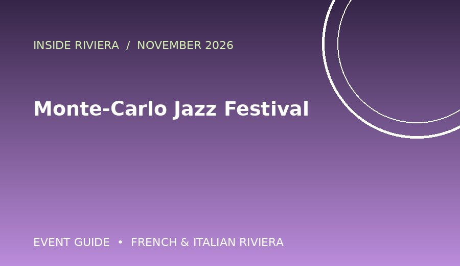
MonacoNovember 2026
Monte-Carlo Jazz Festival
When: 20–30 November
Where: Monaco
Annual jazz festival featuring international musicians.
Official event information ↗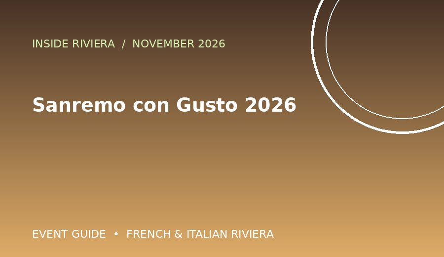
SanremoNovember 2026
Sanremo con Gusto 2026
When: 27–29 November
Where: Sanremo
Food-culture festival in Sanremo, 27–29 November 2026: Slow Food 40th-anniversary tribute and dinner on Friday, Ligurian recipe show-cooking and gluten-free events on Saturday, and a Sanremo red-shrimp celebration with talks and tastings on Sunday.
Official event information ↗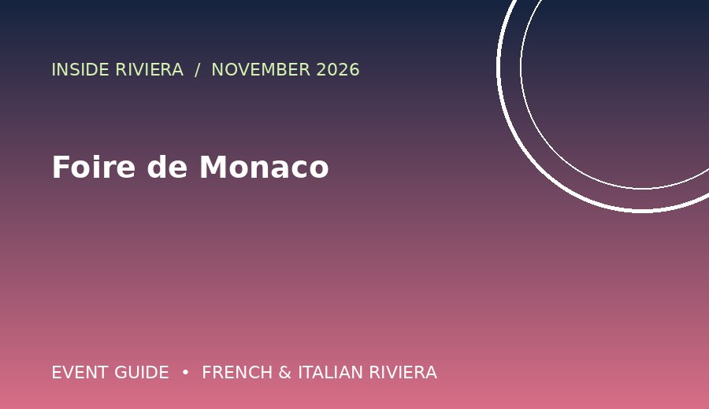
MonacoNovember 2026
Foire de Monaco
When: Until 19 November
Where: Monaco
Traditional funfair (Foire Attractions) on the Port of Monaco featuring rides, games, and food stalls. Open daily from 14:00 (children's rides from 11:00). Info: www.mairie.mc
Official event information ↗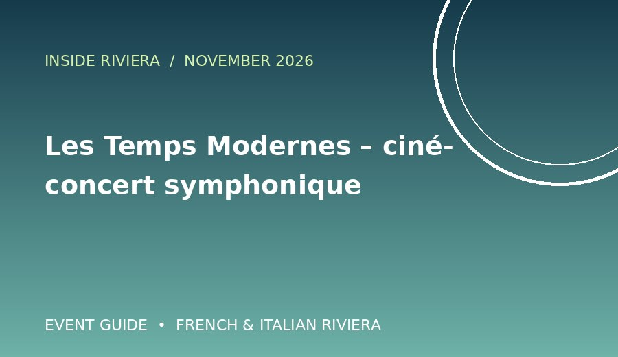
MonacoNovember 2026
Les Temps Modernes – ciné-concert symphonique
When: 4 November
Where: Monaco
Ciné-concert symphonique: projection du film Modern Times de Charlie Chaplin avec orchestre dirigé par Frank Strobel.
Official event information ↗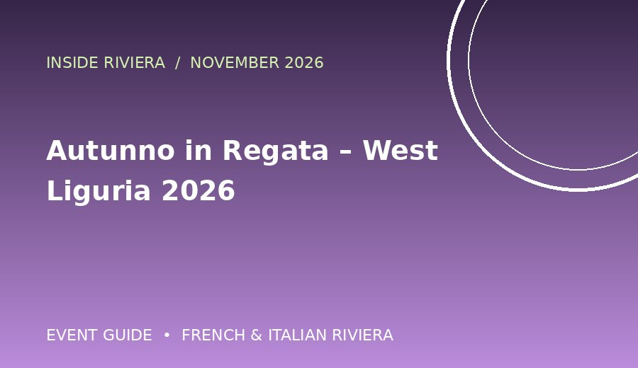
SanremoNovember 2026
Autunno in Regata – West Liguria 2026
When: 7–8 November
Where: Sanremo
Sailing regatta in the 43rd West Liguria Winter Championship, 7–8 November 2026, organised by Yacht Club Sanremo. Official club photo is from an earlier regatta.
Official event information ↗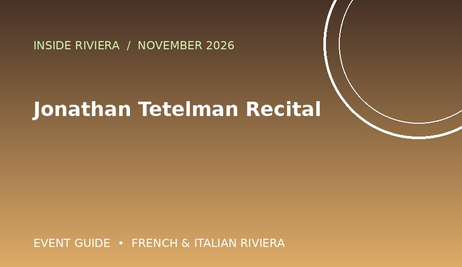
MonacoNovember 2026
Jonathan Tetelman Recital
When: 7 November
Where: Monaco
Opening recital of the season with tenor Jonathan Tetelman and James Vaughan.
Official event information ↗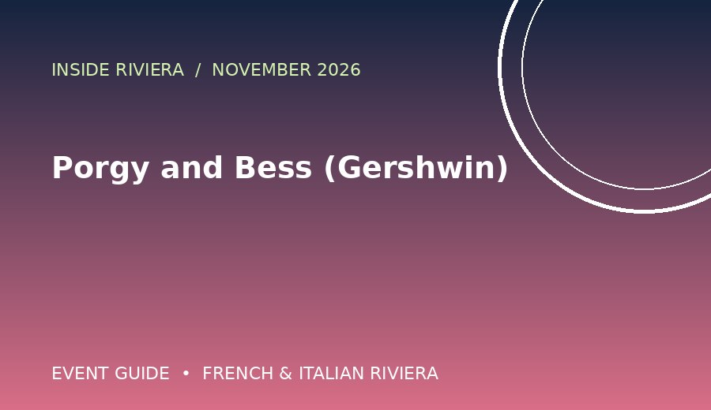
MonacoNovember 2026
Porgy and Bess (Gershwin)
When: 15–21 November
Where: Monaco
Staged production led by Michael Sumuel and Brittany Olivia Logan, conducted by Lee Reynolds.
Official event information ↗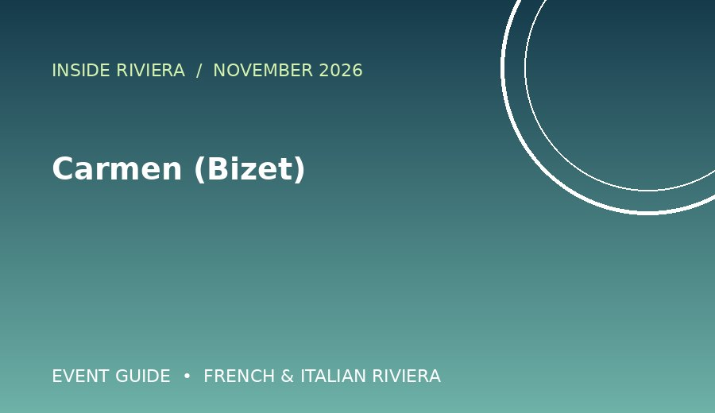
MonacoNovember 2026
Carmen (Bizet)
When: 20 November
Where: Monaco
Semi-staged production featuring Marina Viotti, Benjamin Bernheim, and Erwin Schrott.
Official event information ↗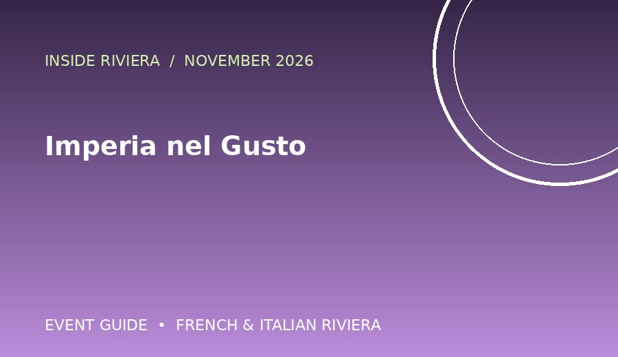
ImperiaNovember 2026
Imperia nel Gusto
When: 29–30 November
Where: Imperia
Food and local gastronomy event celebrating products of the territory.
Official event information ↗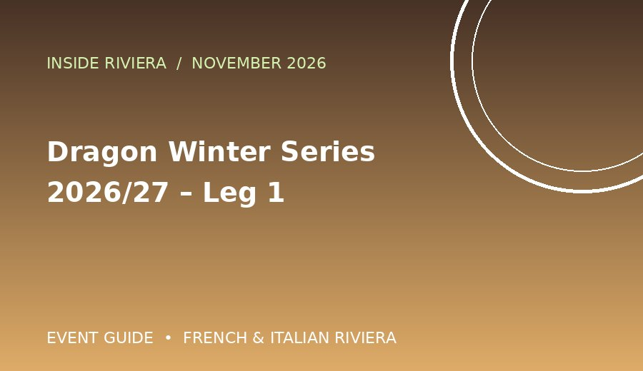
SanremoNovember 2026
Dragon Winter Series 2026/27 – Leg 1
When: 20–22 November
Where: Sanremo
International sailing series event.
Official event information ↗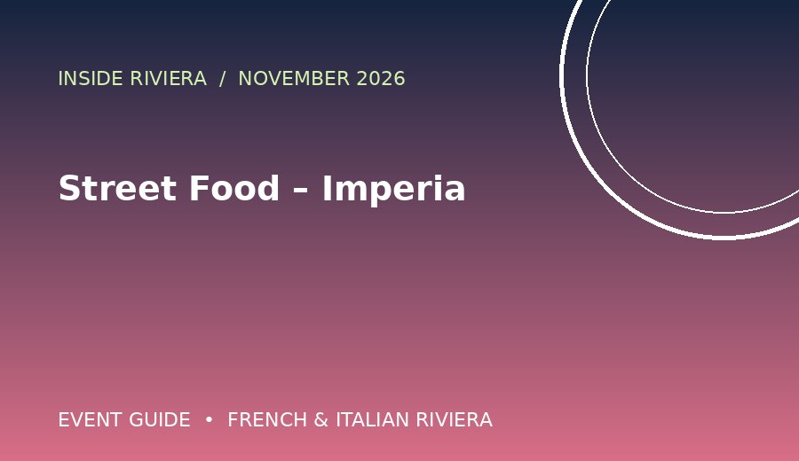
ImperiaNovember 2026
Street Food – Imperia
When: 21–22 November
Where: Imperia
Street food event on 21–22 November 2026, listed by the Riviera dei Fiori destination calendar; venue and individual vendors to be confirmed.
Official event information ↗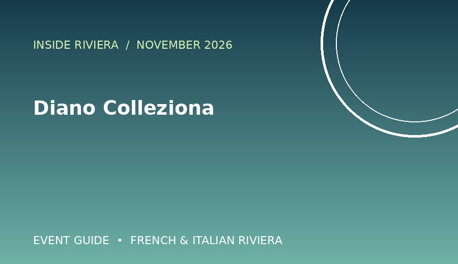
Diano MarinaNovember 2026
Diano Colleziona
When: 1 November
Where: Diano Marina
Open-air market for collectibles, vintage items and unusual objects; 1 November 2026.
Official event information ↗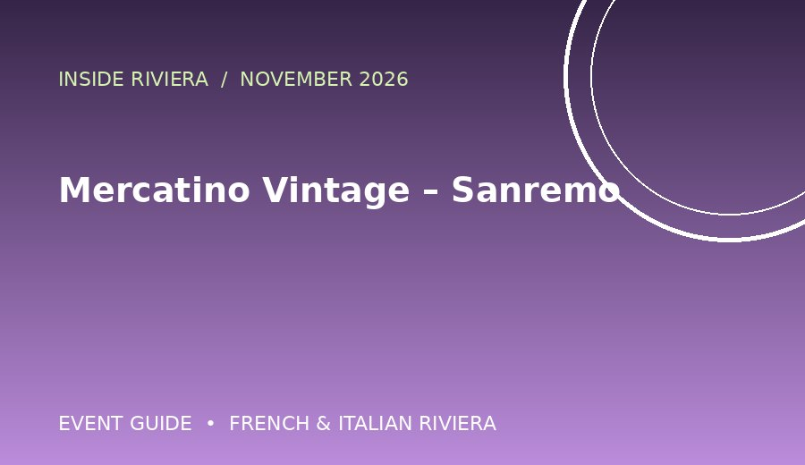
SanremoNovember 2026
Mercatino Vintage – Sanremo
When: 2 November
Where: Sanremo
Vintage market in Sanremo on 2 November 2026, according to the Riviera dei Fiori events calendar.
Official event information ↗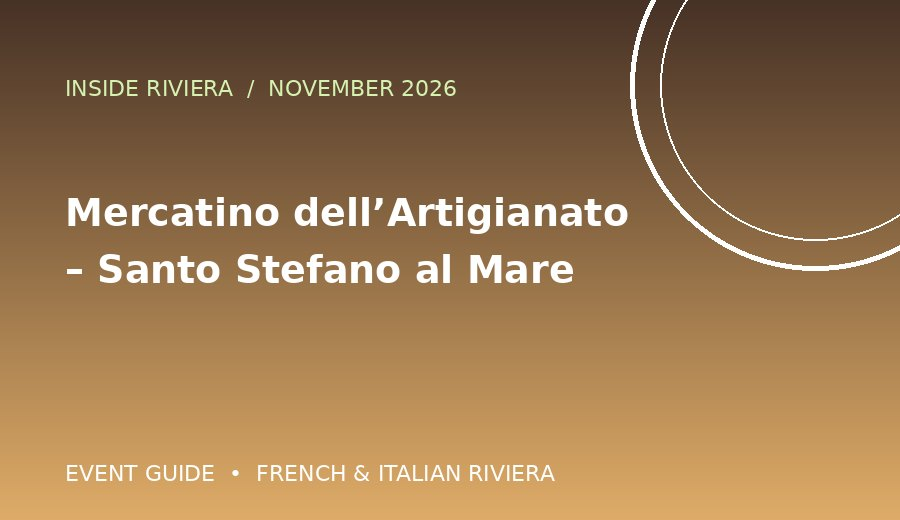
Santo Stefano al MareNovember 2026
Mercatino dell’Artigianato – Santo Stefano al Mare
When: 15 November
Where: Santo Stefano al Mare
Craft market with artisan stands and handmade goods in the village.
Official event information ↗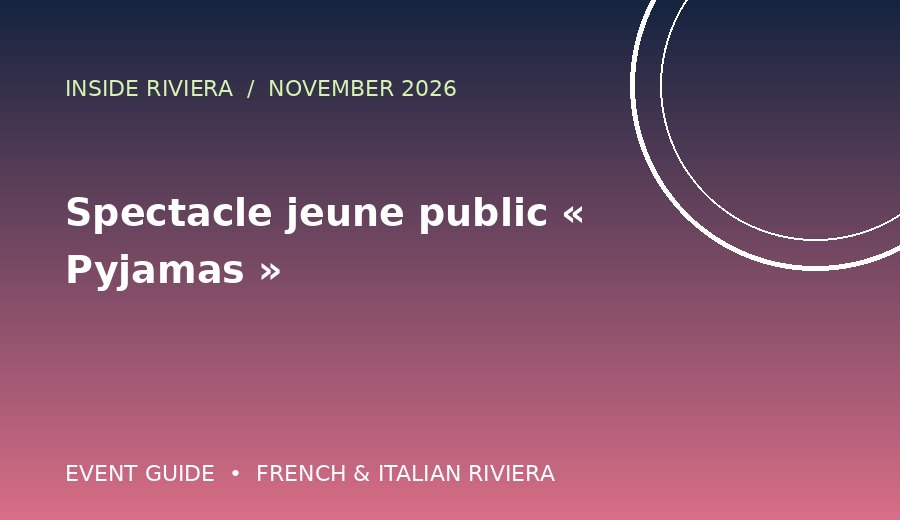
MonacoNovember 2026
Spectacle jeune public « Pyjamas »
When: 14 November
Where: Monaco
Free family show for ages 3+ with play, reading and a themed snack. National Day invitations distributed 4–6 November.
Official event information ↗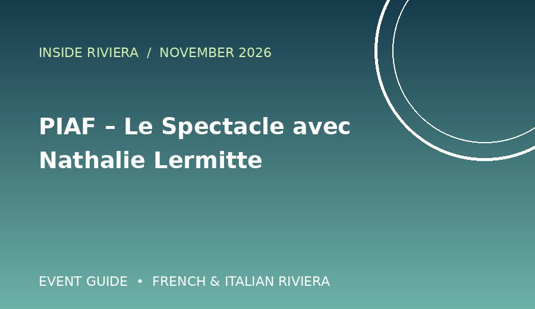
MonacoNovember 2026
PIAF – Le Spectacle avec Nathalie Lermitte
When: 18 November
Where: Monaco
Free official Édith Piaf tribute performance starring Nathalie Lermitte for Monaco National Day; invitations distributed in early November.
Official event information ↗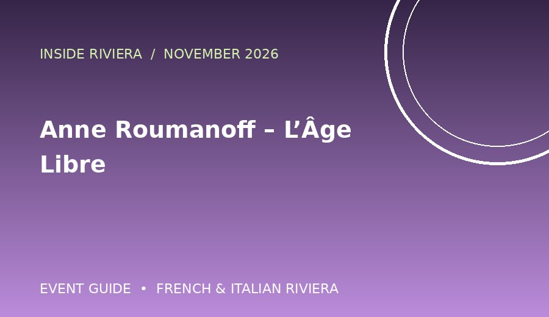
MonacoNovember 2026
Anne Roumanoff – L’Âge Libre
When: 19 November
Where: Monaco
Free stand-up comedy performance by Anne Roumanoff, part of the Monaco National Day programme; invitations required.
Official event information ↗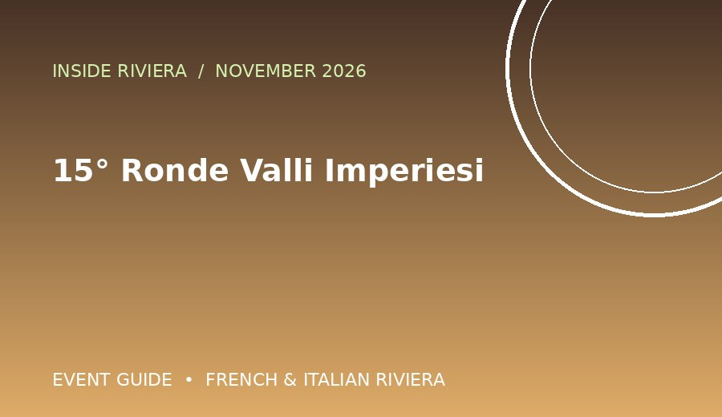
ImperiaNovember 2026
15° Ronde Valli Imperiesi
When: 27–29 November
Where: Imperia
Rally competition in the Imperia area.
Official event information ↗